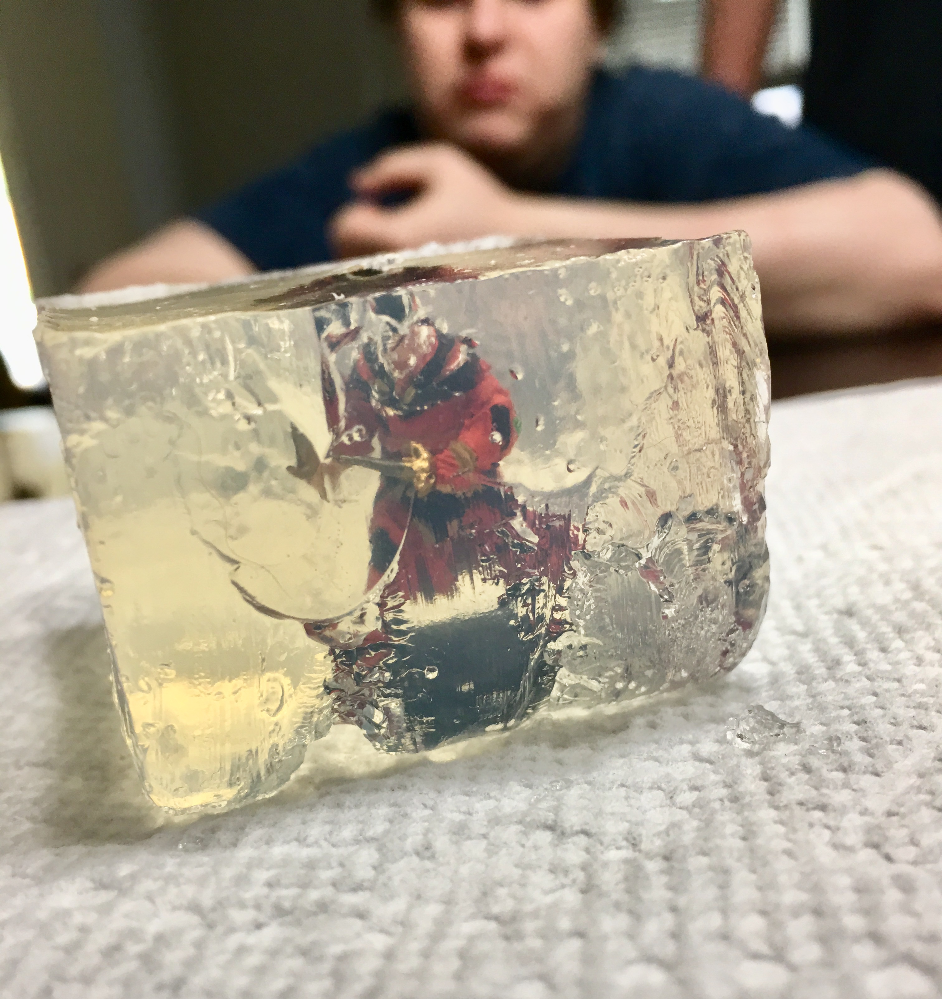

Ingredients:
- - Clear gelatin (amazon)
- - Clear soda (like Sprite) or Water
- - Flavored vodka
- - 2" Silicone Ice Cube Trays (amazon)
- - Roleplaying Minis (amazon)
Instructions
- - Boil cup of water.
- - Empty gelatin powder into a large mixing bowl and add the boiling water.
- - Continue stirring until the jello is completely dissolved.
- - Add in the 1/2 cup of sprite and 1/2 cup of vodka.
- - Stir until mixed and pour into square ice cube trays.
- - Place (clean) miniatures in tray.
- - Refrigerate until firm.
- - Dip bottom of ice cube trays in warm water before removing.